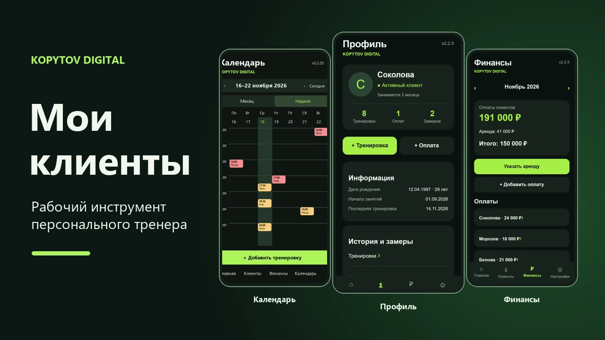
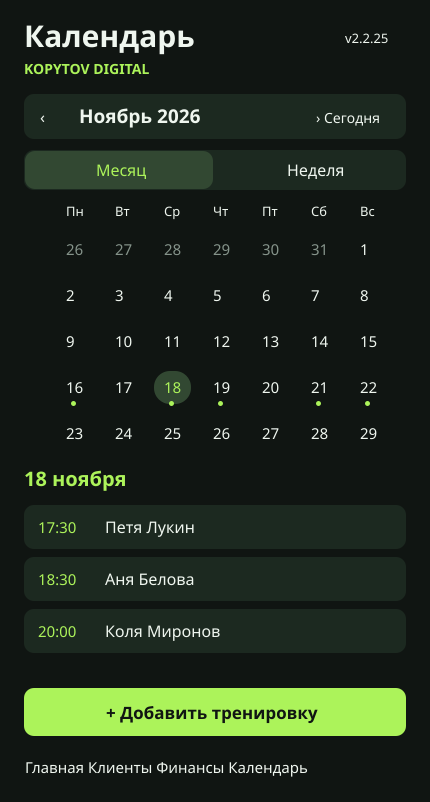

ЛИЧНЫЙ РАБОЧИЙ ПРОДУКТ · ANDROID · v2.2.25
Мои клиенты
Я сделал это приложение для своей работы персональным тренером. В календаре планирую занятия, в профиле клиента храню дату рождения, дату начала тренировок, историю занятий и замеры. В разделе «Финансы» отмечаю оплаты и вижу остаток за месяц после аренды.
Kotlin · Android SDK · SQLite · Gradle · GitHub Actions

Календарь тренировок
Расписание доступно по месяцам и неделям. Из календаря можно добавить тренировку. Интерфейс подстраивается под размер экрана и учитывает системные отступы Android при управлении жестами и кнопками.

Демонстрация интерфейса с вымышленными именами.


Демонстрационные экраны воссозданы по интерфейсу версии 2.2.5. Фамилии, даты, замеры и финансовые показатели вымышлены. Реальные данные клиентов не публикуются.
Задача
Собрать клиентов, историю тренировок и оплаты в одном месте вместо разрозненных записей. Приложение должно работать без интернета и позволять вручную сохранять копии данных.
Что реализовано
- Клиенты, история тренировок и общая таблица с датой, номером и заметками.
- Поиск и архив клиентов, профиль с историей тренировок, оплат и произвольных замеров.
- Графики динамики замеров и изменения между датами.
- Учёт оплат и ежемесячной аренды, финансовая сводка по месяцам.
- Локальная база SQLite, ZIP-копии с данными и фотографиями, восстановление с поддержкой прежнего JSON-формата.
- Сборка APK через GitHub Actions, распространение через GitHub Releases; проверка обновлений вручную и при запуске.
Результат
Приложение используется мной на практике; текущая представленная версия — 2.2.5. Это самостоятельный продукт для личных задач, не коммерческий заказ. Развитие продолжается по мере появления новых потребностей.
Исходный код закрыт. Публично доступны релизы приложения.